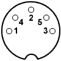
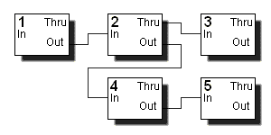

Musical Instrument Digital Interface - цифровой интерфейс музыкальных инструментов. Создан в 1982 году ведущими производителями электронных музыкальных инструментов - Yamaha, Roland, Korg, E-mu и др. Изначально был предназначен для замены принятого в то время управления музыкальными инструментами при помощи аналоговых сигналов управлением при помощи информационных сообщений, передаваемых по цифровому интерфейсу. Впоследствии стал стандартом де-факто в области электронных музыкальных инструментов и компьютерных модулей синтеза.
MIDI представляет собой так называемый событийно-ориентированный протокол связи между инструментами. Всякий раз, когда исполнитель производит какое-либо воздействие на органы управления нажатие/отпускание клавиш, педалей, изменение положений регуляторов и т.п., инструмент формирует соответствующее MIDI-сообщение, в тот же момент посылаемое по интерфейсу. Другие инструменты, получая сообщения, отрабатывают их так же, как и при воздействии на их собственные органы управления. Таким образом, поток MIDI-сообщений представляет собой как бы слепок с действий исполнителя, сохраняя присущий ему стиль исполнения - динамику, технические приемы и т.п. При записи на устройства хранения информации MIDI-сообщения снабжаются временнЫми метками, образуя своеобразный способ представления партитуры. При воспроизведении по этим меткам полностью и однозначно восстанавливается исходный MIDI-поток.
Спецификация MIDI состоит из аппаратной спецификации самого интерфейса и спецификации формата данных - описания системы передаваемых сообщений. Соответственно, различается аппаратный MIDI-интерфейс и формат MIDI-данных (так называемая MIDI-партитура); интерфейс используется для физического соединения источника и приемника сообщений, формат данных - для создания, хранения и передачи MIDI-сообщений. В настоящее время эти понятия стали самостоятельными и обычно используются отдельно друг от друга - по MIDI-интерфейсу могут передаваться данные любого другого формата, а MIDI-формат может использоваться только для обработки партитур, без вывода на устройство синтеза.
Интерфейс - старт-стопный последовательный "токовая петля" (активный передатчик, 5 мА, токовая посылка - 0, бестоковая - 1), скоростью передачи 31250 +/-1% бит/с и протоколом 8-N-1 (один стартовый бит, 8 битов данных, один бит стопа, без четности). Передатчики и приемники должны обеспечивать длительность фронтов менее 2 мкс.
Каждый инструмент имеет три соединительных разъема: In (вход), Out (выход) и Thru (копия сигнала с In через буфер). Все разъемы - типа female DIN-5 (СГ-5), вид с наружной стороны (стороны соединения):

Контакты 4 и 5 - сигнальные, контакт 2 - экран. Полярность сигналов дается относительно источника тока: контакт 4 - плюс (ток вытекает из вывода), контакт 5 - минус (ток втекает в вывод). Таким образом, для разъемов Out и Thru назначение то же, для разъема In - обратное. Для соединения используется двужильный экранированный кабель длиной до 50 футов (около 15 м). Экран необходим только для защиты от излучаемых помех - кабель практически нечувствителен к наводкам извне. Соединение разъемов на двух концах кабеля - прямое (2-2, 4-4, 5-5).
Один MIDI-передатчик допускает подключение до четырех приемников.
Описанная схема позволяет создавать сеть MIDI-устройств, подключая их по цепочке и нескольким направлениям:

В этой схеме устройство 1 служит источником сообщений, которые получает устройство 2 и через его ретранслятор - устройство 3. Устройство 4 получает сообщения, посылаемые устройством 2 (они могут как включать, так и не включать получаемые самим устройством 2) и ретранслирует их на вход устройства 5.
MIDI-данные представляют собой сообщения, или события (events), каждое из которых является командой для музыкального инструмента. Стандарт предусматривает 16 независимых и равноправных логических каналов, внутри каждого из которых действуют свои режимы работы; изначально это было предназначено для однотембровых инструментов, способных в каждый момент времени воспроизводить звук только одного тембра - каждому инструменту присваивался свой номер канала, что давало возможность многотембрового исполнения. С появлением многотембровых (multi-timbral) инструментов они стали поддерживать несколько каналов (современные инструменты поддерживают все 16 каналов и могут иметь более одного MIDI-интерфейса), поэтому сейчас каждому каналу обычно назначается свой тембр, называемый по традиции инструментом, хотя возможна комбинация нескольких тембров в одном канале. Канал 10 по традиции используется для ударных инструментов - различные ноты в нем соответствуют различным ударным звукам фиксированной высоты; остальные каналы используются для мелодических инструментов, когда различные ноты, как обычно, соответствуют различной высоте тона одного и того же инструмента.
Поскольку MIDI-сообщения представляют собой поток данных в реальном времени, их кодировка разработана для облегчения синхронизации в случае потери соединения. Для этого первый байт каждого сообщения, называемый также байтом состояния (status byte), содержит "1" в старшем разряде, а все остальные байты содержат в нем "0" и называются байтами данных (data bytes). Если после получения всех байтов данных последнего сообщения на вход приемника поступает байт, не содержащий "1" в старшем разряде - это трактуется как повторение информационной части сообщения (подразумевается такой же первый байт). Такой метод передачи носит название "Running Status" и широко используется для уменьшения объема передаваемых данных - например, передается один байт команды "Controller Change" с нужным номером канала, а затем - серия байтов данных с номерами и значениями контроллеров для этого канала.
MIDI- сообщения делятся на канальные - относящиеся к конкретному каналу, и системные - относящиеся к системе в целом. Кодировка MIDI-сообщений (шестнадцатеричная, n в первом байте обозначает номер канала):
На основе MIDI позднее был разработан стандарт GM (General MIDI - единый MIDI), устанавливающий условия обязательной совместимости инструментов и интерпретации номеров программ и контроллеров, а затем и другие стандарты (GS, XG), расширяющие GM. Однако общность инструментов внутри каждого стандарта подразумевает только основные звуковые характеристики. "Одинаковые" тембры на различных инструментах почти всегда имеют различную окраску, динамику, яркость, громкость по умолчанию и другие особенности, а "синтетические" тембры могут совершенно отличаться друг от друга. Кроме этого, у разных инструментов различается зависимость характера звука от силы удара по клавише, динамика работы MIDI-контроллеров, положения контроллеров по умолчанию и прочие "тонкие" параметры. Поэтому MIDI-партитура, подготовленная для конкретного инструмента, на других инструментах (даже внутри стандарта) часто звучит совершенно по-другому, и это необходимо учитывать при переносе партитур с между инструментами различных моделей.
Инструменты, поддерживающие стандарты GM и GS, почти всегда имеют дополнительные средства управления синтезом и обработкой звука, расширяющие рамки стандарта. При этом используемые способы управления, как правило, сохраняются внутри одной линии инструментов и внутри инструментов одного производителя.
Многие устройства могут работать с большим количеством встроенных и дополнительных тембров (инструментов) и звуковых эффектов, которые для удобства объединены в банки. В каждый момент времени в одном канале может использоваться только один банк; для переключения банков служат контроллеры:
Одни устройства требуют для переключения банков только один из этих контроллеров, другие требуют оба. Поведение некоторых устройств в этом отношении может изменяться в различных режимах работы.
По умолчанию устанавливается нулевой банк. После смены банка обязательна посылка сообщения Program Change для выбора тембра (инструмента).
Обработка устройством команды смены банка и инструмента может занять значительное время (десятки миллисекунд и более). Некоторые устройства при получении команд смены банков и инструментов гасят звучащие ноты в канале.
Задает глубину частотной модуляции в канале. Управление абсолютное. Значение 0 отключает модуляцию, значение 127 устанавливает максимальную глубину. Стандартное значение - 0. Действует на последующие и уже звучащие ноты.
Задает время плавного скольжения от частоты предыдущей ноты до частоты очередной ноты. Управление абсолютное. Значение 0 соответствует минимальному времени, 127 - максимальному. Стандартное значение не определено.
Задает громкость звучания внутри канала. Управление абсолютное. Стандартное значение - обычно 100. Действует на последующие и уже звучащие ноты.
Задает соотношение уровня стереоканалов (точку стереопанорамы) для канала. Управление абсолютное. Значение 0 - крайняя левая позиция, 64 - средняя, 127 - крайняя правая. Стандартное значение - 64. Действует на последующие и уже звучащие ноты.
Задает степень выразительности звука. Управление абсолютное. На простых инструментах дублирует контроллер Main Volume и действует и на последующие, и на уже звучащие ноты. На инструментах с развитым синтезом управляет более тонкими параметрами выразительности, и действует только на последующие ноты. Стандартное значение - обычно 127.
Задает добротность (глубину резонанса) фильтра канала, позволяющего подчеркнуть высокочастотные гармоники тембра. Увеличение добротности увеличивает крутизну характеристики фильтра в области среза, усиливая частоты, лежащие непосредственно ниже частоты среза. Управление относительное (0..64..127). Стандартное значение - 64.
Задает время концевого затухания звучания нот с момента отработки Note Off (явного или автоматического) до полного исчезновения звука. Управление относительное (0..64..127). Стандартное значение - 64.
Задает время начальной атаки - нарастания громкости звучания нот с момента отработки Note On до максимального значения громкости. Управление относительное (0..64..127). Стандартное значение - 64.
Задает частоту среза фильтра канала, управляющую ослаблением высоких частот звука. Управление относительное (0..64..127). Стандартное значение - 64.
Задает номер ноты, от которой выполняется плавная перестройка частоты в режиме Portamento, и позволяет установить исходную высоту, отличную от определяемой последним сообщением Note On.
Задает глубину выбранного эффекта типа реверберации (основанного на постоянной задержке сигнала) - Room, Hall, Delay, Echo и т.п. Управление - абсолютное или относительное в зависимости от инструмента.
Задает глубину эффекта типа хорового (основанного на переменной задержке сигнала) - Chorus, Flanger, Phaser и т.п. Управление - абсолютное или относительное в зависимости от инструмента.
Задает глубину эффекта, выбранного в качестве Variation. Управление - абсолютное или относительное в зависимости от инструмента.
Во включенном состоянии вызывает удержание звучания для всех клавиш, отпущенных во время действия контроллера - по аналогии с правой педалью фортепиано. Иными словами, в режиме Sustain канал задерживает отработку последнего поступившего для каждой ноты сообщения Note Off. В момент отключения одновременно отрабатываются все задержанные таким образом Note Off; на явно удерживаемые в этот момент клавиши (для которых последним поступившим сообщением является Note On) отключение режима не влияет.
Действует подобно Sustain, но удерживает звучание только тех нот, которые были нажаты на момент включения контроллера. Последующие нажатия и отпускания отрабатываются в обычном порядке. Иначе говоря, откладывается отработка Note Off только для тех нот, Note On для которых поступили до включения режима.
По аналогии с левой педалью фортепиано, вызывает смягчение звучания для нот, нажатых во время действия режима. Способ реализации - простое уменьшение громкости или более тонкое управление - определяется инструментом.
При выключенном режиме каждая нажатая нота начинает звучать на частоте, определяемой высотой ноты и установленными на данный момент значениями контроллеров управления высотой (Pitch Bend Change и Coarse/Fine Tune и т.п.). При включенном режиме очередная нота начинает звучать на частоте, определяемой последним сообщением Note On или контроллером Portamento Control, затем ее высота плавно изменяется до нужной со скоростью, определяемой контроллером Portamento Time. Вне зависимости от того, было ли скольжение выполнено до конца или прервано по отпусканию ноты, последнее сообщение Note On всегда фиксируется в качестве исходной высоты для последующих нот. Это означает, что если, например, после ноты C2 была нажата нота C7, а затем - нота C4, то высота второй ноты будет плавно повышаться от C2 до C7, а высота третьей в то же время - понижаться от C7 до 50, и в качестве исходной для последующих нот будет принята нота 50. В момент нажатия C7 эта нота зазвучит в унисон с C2 и начнет скользить в сторону C7, а в момент нажатия ноты C4 та зазвучит с высотой C7 и начнет скользить к C4. Все скольжения выполняются независимо.
Дополнительно для расширенного управления синтезом введены зарегистрированные (Registered Parameter Number - RPN) и незарегистрированные (Non-Registered Parameter Number - NRPN) номера параметров, передаваемые при помощи контроллеров:
Устройство запоминает однажды переданные ему RPN или NRPN, после которых могут передаваться значения выбранного параметра при помощи контроллеров:
Таким образом, механизм представляет собой "контроллер в контроллере". Стандартом General MIDI определена интерпретация только трех RPN, значения которых задаются старшими байтами параметров Data Entry:
Чувствительность Pitch Bend определяет количество полутонов, на которое смещается высота тона при получении сообщения Pitch Bend Change с предельным верхним или нижним значением параметра. По умолчанию принимается диапазон в два полутона в любую сторону.
RPN подстройки позволяют сместить строй инструмента в канале на заданное количество полутонов при грубой, или центов (сотых долей полутона) - при точной подстройке. За относительный нуль принимается значение 64.
Интерпретация остальных параметров стандартом GM не определена. В ряде инструментов для раздельной подстройки отдельных инструментов в различных банках используются также два дополнительных RPN:
Стандартом GS введен набор NRPN для управления генераторами огибающих и резонансными фильтрами (номера NRPN даны в виде значений старшего и младшего байтов):
а также - для раздельной настройки параметров ударных инструментов (nn - номер ноты инструмента):
Значения параметров задаются старшими байтами Data Entry.
Стандартом XG введены дополнительные NRPN для ударных:
Задаются контроллерами 120..127 и управляют обработкой сообщений в каналах:
Обязательными к реализации в General MIDI определены только контроллеры 121 и 123; реализация остальных перечисленных контроллеров определяется производителем. Кроме этого, многие устройства требуют, чтобы неиспользуемые значения контроллеров были нулевыми.
Сообщение All Notes Off имитирует выключение всех включенных нот и полностью эквивалентно посылке сообщения Note Off для каждой звучащей ноты; будет ли при этом прекращено звучание ноты - зависит от состояния режимов Sustain и Sostenuto. Сообщение All Sounds Off действует так же, но не зависит от режимов Sustain/Sostenuto; кроме того, оно немедленно прекращает звучание всех нот, находящихся в стадии концевого затухания (Release). Состояние самих режимов Sustain/Sostenuto эти сообщения не затрагивают.
Сообщение Reset All Controllers устанавливает все контроллеры в значения по умолчанию, и используется для начальной установки устройства перед проигрыванием партитуры.
Сообщение Local Control служит для запрета/разрешения управления устройством с локальной панели. Нулевое значение параметра запрещает управление с панели (устройство управляется только по MIDI), значение 127 разрешает его.
Сообщения Omni On/Off служат для включения/выключения режима Omni - реакции устройства на канальные сообщения. При включенном режиме Omni устройство обрабатывает сообщения для всех каналов, при отключенном - только сообщения для выбранного канала (Basic Channel). Это позволяет разделить устройства между каналами. Канал назначается устройству либо с его панели управления, либо при помощи сообщений SysEx. Режим Omni имеет смысл в основном для старых инструментов, имеющих один MIDI-канал и не поддерживающих разделение тембров.
Сообщения Mono/Poly служат для переключения одноголосного и многоголосного (полифонического) режимов. В одноголосном режиме в каждый момент времени может звучать только одна нота; включение новой ноты приводит к принудительному отключению предыдущей. В полифоническом режиме включение каждой новой ноты запускает очередной свободный генератор, а при исчерпании генераторов новые ноты либо игнорируются, либо приводят к принудительному выключению наиболее "старых" нот.
Значение nn в сообщении Mono воспринимается некоторыми устройствами, как количество MIDI-каналов, по которым, начиная с Basic Channel, распределяются ноты в одноголосном режиме при выключенном режиме Omni. Смысл этой группы каналов различен для передающих и принимающих устройств. Передающее устройство направляет первую ноту в Basic Channel, следующую за ней - в Basic Channel + 1, и так далее, затем очередная нота снова направляется в Basic Channel, и цикл повторяется. Приемное устройство воспринимает канальные сообщения только внутри заданной группы каналов, каждый из которых работает в одноголосном режиме. Такой прием позволяет реализовать многоголосное исполнение на синтезаторах, имеющих жесткую привязку голосов (генераторов) к MIDI-каналам.
Контроллеры Omni, Mono и Poly вызывают также отработку контроллера All Sounds Off.
От различных сочетаний режимов Omni, Poly и Mono происходят четыре основных режиме работы (mode) MIDI-устройств:
Большинство современных устройств работает в mode 3 - полифонический режим с независимой работой каналов.
Служит для смены инструмента в канале. Параметр задает номер инструмента (0..127) в текущем выбранном банке. Стандартом General MIDI определены 128 основных мелодических и 47 ударных инструментов, собранных в нулевом банке; устройства с расширенным набором инструментов имеют дополнительные банки, а также могут иметь частично измененный основной набор.
Стандартные мелодические инструменты General MIDI разделены на 16 групп по 8 инструментов в каждой группе:
|
Piano |
Chrom Percussion |
|
0 Acoustic Grand Piano |
8 Celesta |
|
1 Bright Acoustic Piano |
9 Glockenspiel |
|
2 Electric Grand Piano |
10 Music Box |
|
3 Honky-tonk Piano |
11 Vibraphone |
|
4 Electric Piano 1 |
12 Marimba |
|
5 Electric Piano 2 |
13 Xylophone |
|
6 Harpsichord |
14 Tubular Bells |
|
7 Clavinet |
15 Dulcimer |
|
| |
|
Organ |
Guitar |
|
16 Drawbar Organ |
24 Acoustic Guitar (nylon) |
|
17 Percussive Organ |
25 Acoustic Guitar (steel) |
|
18 Rock Organ |
26 Electric Guitar (jazz) |
|
19 Church Organ |
27 Electric Guitar (clean) |
|
20 Reed Organ |
28 Electric Guitar (muted) |
|
21 Accordion |
29 Overdriven Guitar |
|
22 Harmonica |
30 Distortion Guitar |
|
23 Tango Accordion |
31 Guitar Harmonics |
|
| |
|
Bass |
Strings |
|
32 Acoustic Bass |
40 Violin |
|
33 Electric Bass (finger) |
41 Viola |
|
34 Electric Bass (pick) |
42 Cello |
|
35 Fretless Bass |
43 Contrabass |
|
36 Slap Bass 1 |
44 Tremolo Strings |
|
37 Slap Bass 2 |
45 Pizzicato Strings |
|
38 Synth Bass 1 |
46 Orchestral Harp |
|
39 Synth Bass 2 |
47 Timpani |
|
| |
|
Ensemble |
Brass |
|
48 String Ensemble 1 |
56 Trumpet |
|
49 String Ensemble 2 |
57 Trombone |
|
50 Synth Strings 1 |
58 Tuba |
|
51 Synth Strings 2 |
59 Muted Trumpet |
|
52 Choir Aahs |
60 French Horn |
|
53 Voice Oohs |
61 Brass Section |
|
54 Synth Voice |
62 Synth Brass 1 |
|
55 Orchestra Hit |
63 Synth Brass 2 |
|
| |
|
Reed |
Pipe |
|
64 Soprano Sax |
72 Piccolo |
|
65 Alto Sax |
73 Flute |
|
66 Tenor Sax |
74 Recorder |
|
67 Baritone Sax |
75 Pan Flute |
|
68 Oboe |
76 Bottle Blow |
|
69 English Horn |
77 Shakuhachi |
|
70 Bassoon |
78 Whistle |
|
71 Clarinet |
79 Ocarina |
|
| |
|
Synth Lead |
Synth Pad |
|
80 Lead 1 (square) |
88 Pad 1 (new age) |
|
81 Lead 2 (sawtooth) |
89 Pad 2 (warm) |
|
82 Lead 3 (calliope) |
90 Pad 3 (polysynth) |
|
83 Lead 4 (chiff) |
91 Pad 4 (choir) |
|
84 Lead 5 (charang) |
92 Pad 5 (bowed) |
|
85 Lead 6 (voice) |
93 Pad 6 (metallic) |
|
86 Lead 7 (fifths) |
94 Pad 7 (halo) |
|
87 Lead 8 (bass + lead) |
95 Pad 8 (sweep) |
|
| |
|
Synth Effects |
Ethnic |
|
96 FX 1 (rain) |
104 Sitar |
|
97 FX 2 (soundtrack) |
105 Banjo |
|
98 FX 3 (crystal) |
106 Shamisen |
|
99 FX 4 (atmosphere) |
107 Koto |
|
100 FX 5 (brightness) |
108 Kalimba |
|
101 FX 6 (goblins) |
109 Bagpipe |
|
102 FX 7 (echoes) |
110 Fiddle |
|
103 FX 8 (sci-fi) |
111 Shanai |
|
| |
|
Percussive |
Sound Effects |
|
112 Tinkle Bell |
120 Guitar Fret Noise |
|
113 Agogo |
121 Breath Noise |
|
114 Steel Drums |
122 Seashore |
|
115 Woodblock |
123 Bird Tweet |
|
116 Taiko Drum |
124 Telephone Ring |
|
117 Melodic Tom |
125 Helicopter |
|
118 Synth Drum |
126 Applause |
|
119 Reverse Cymbal |
127 Gunshot |
Стандартные ударные инструменты General MIDI доступны в канале 10:
|
35 Acoustic Bass Drum |
59 Ride Cymbal 2 |
|
36 Bass Drum 1 |
60 High Bongo |
|
37 Side Kick |
61 Low Bongo |
|
38 Acoustic Snare |
62 Mute High Conga |
|
39 Hand Clap |
63 Open High Conga |
|
40 Electric Snare |
64 Low Conga |
|
41 Low Floor Tom |
65 High Timbale |
|
42 Closed High-Hat |
66 Low Timbale |
|
43 High Floor Tom |
67 High Agogo |
|
44 Pedal High Hat |
68 Low Agogo |
|
45 Low Tom |
69 Cabasa |
|
46 Open High Hat |
70 Maracas |
|
47 Low-Mid Tom |
71 Short Whistle |
|
48 High-Mid Tom |
72 Long Whistle |
|
49 Crash Cymbal 1 |
73 Short Guiro |
|
50 High Tom |
74 Long Guiro |
|
51 Ride Cymbal 1 |
75 Claves |
|
52 Chinese Cymbal |
76 High Wood Block |
|
53 Ride Bell |
77 Low Wood Block |
|
54 Tambourine |
78 Mute Cuica |
|
55 Splash Cymbal |
79 Open Cuica |
|
56 Cowbell |
80 Mute Triangle |
|
57 Crash Cymbal 2 |
81 Open Triangle |
|
58 Vibraslap |
|
Задает смещение высоты тона для всех нот в канале - как звучащих, так и последующих. Значение, образованное двумя 7-разрядными величинами, изменяется в диапазоне 0..16383; среднее значение - 8192 - принимается за относительный нуль, что дает условный диапазон изменения -8192..8191. Чувствительность Pitch Bend может изменяться при помощи RPN 0; по умолчанию принимается предельное смещение на два полутона в любую сторону.
Служат для передачи специальной информации определенным устройствам. В сообщении SysEx может передаваться любое количество байтов. Признаком конца сообщения служит байт F7. Первые три байта SysEx обычно содержат идентификатор производителя устройства (присваивается Ассоциацией Производителей MIDI-устройств - MMA), номер устройства в сети (задается с пульта) и код модели устройства (присваивается производителем). В остальном формат сообщений определяется производителем - это могут быть команды, параметры, оцифрованные инструменты, партитуры и т.п.
Шестнадцатеричные идентификаторы наиболее известных производителей:
|
Sequential Circuits |
|
01 |
|
Big Briar |
|
02 |
|
Octave / Plateau |
|
03 |
|
Moog |
|
04 |
|
Passport Designs |
|
05 |
|
Lexicon |
|
06 |
|
PAIA |
|
11 |
|
Simmons |
|
12 |
|
Gentle Electric |
|
13 |
|
Fairlight |
|
14 |
|
Bon Tempi |
|
20 |
|
S.I.E.L. |
|
21 |
|
SyntheAxe |
|
23 |
|
Kawai |
|
40 |
|
Roland |
|
41 |
|
Korg |
|
42 |
|
Yamaha |
|
43 |
SysEx "General MIDI On" (переключение в режим GM для устройств, поддерживающих дополнительные стандарты): F0 7E 7F 09 01 F7.
SysEx "General Synth On" (переключение в режим Roland GS для устройств, поддерживающих этот стандарт): F0 41 10 42 12 40 00 7F 00 41 F7.
SysEx "XG System On" (переключение в режим Yamaha XG для устройств, поддерживающих этот стандарт): F0 43 1n 4C 00 00 7E 00 F7, где n - номер устройства в сети (устанавливается по-разному для разных устройств, по умолчанию 0).
Ряд устройств требует, чтобы включение режимов GS и XG выполнялось из режима GM. Переключение между режимами обычно занимает несколько десятков миллисекунд и вызывает также полный сброс MIDI-системы устройства.
Предписывает выполнить автоматическую подстройку устройствам, нуждающимся в ней. Обычно это относится к аналоговым синтезаторам, строй которых может смещаться из-за нестабильности управляющих элементов.
Служит для установки позиции в партитуре для устройств, имеющих встроенный секвенсор, автоаккомпанемент или ритм-блок. Задается номером четвертной (quarter) ноты с начала партитуры.
Определяет, какая из существующих партитур будет проигрываться при получении сообщения Start.
Запускает прогрывание или запись выбранной партитуры с начала.
Останавливает проигрывание или запись партитуры.
Запускает проигрывание или запись партитуры с прерванного места, либо с позиции, установленной с помощью Song Position Pointer.
Служит для синхронизации устройств и передается с частотой 6 сообщений на четвертную ноту. Генерация этого сообщения не является обязательной для передающего устройства.
Используется для проверки наличия связи внутри MIDI-сети. Генерация сообщения не является обязательной для передающих устройств. В случае получения этого сообщения каждое приемное устройство переходит в режим слежения за MIDI-потоком, и в случае отсутствия любых сообщений в течение 300 мс автоматически отрабатывает контроллеры All Notes Off, All Sounds Off и Reset All Controllers. Это позволяет прекратить работу в случае нарушения связи в сети. Однако до первого прохождения этого сообщения по сети устройства не следят за длительностью пауз между сообщениями.
Основное применение MIDI - хранение и передача музыкальной информации. Это может быть управление электронными музыкальными инструментами в реальном времени, запись MIDI-потока, формируемого при игре исполнителя, на носитель данных с последующим редактированием и воспроизведением (так называемый MIDI-секвенсор), синхронизация различной аппаратуры (синтезаторы, ритм-машины, магнитофоны, блоки обработки звука, световая аппаратура, дымогенераторы и т.п.).
Устройства, предназначенные только для создания звука по MIDI-командам, не имеющие собственных исполнительских органов, называются тон-генераторами. Многие тон-генераторы имеют панель управления и индикации для установки основных режимов работы и наблюдения за ними, однако создание звука идет под управлением поступающих MIDI-команд.
Устройства, предназначенные только для формирования MIDI-сообщений, не содержащие средств синтеза звука, называются MIDI-контроллерами. Это может быть клавиатура, педаль, рукоятка с несколькими степенями свободы, ударная установка с датчиками способа и силы удара, а также - струнный или духовой инструмент с датчиками и анализаторами способов воздействия и приемов игры. Тон-генератор с достаточными возможностями по управлению может весьма точно воспроизвести оттенки звучания инструмента по сформированному контроллером MIDI-потоку.
Для хранения MIDI-партитур на носителях данных разработаны форматы SMF (Standard MIDI File - стандартный MIDI-файл) трех типов:
В основном применяется формат 1, позволяющий хранить одно произведение в файле.
Кроме MIDI-событий, файл содержит также "фиктивные события" (Meta Events), используемые только для оформления файла и не передаваемые по интерфейсу - информация о метрике и темпе, описание произведения, названия партий, слова песни и т.п.